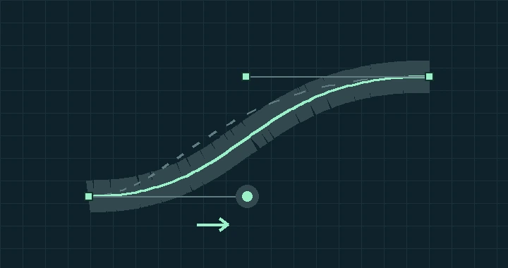
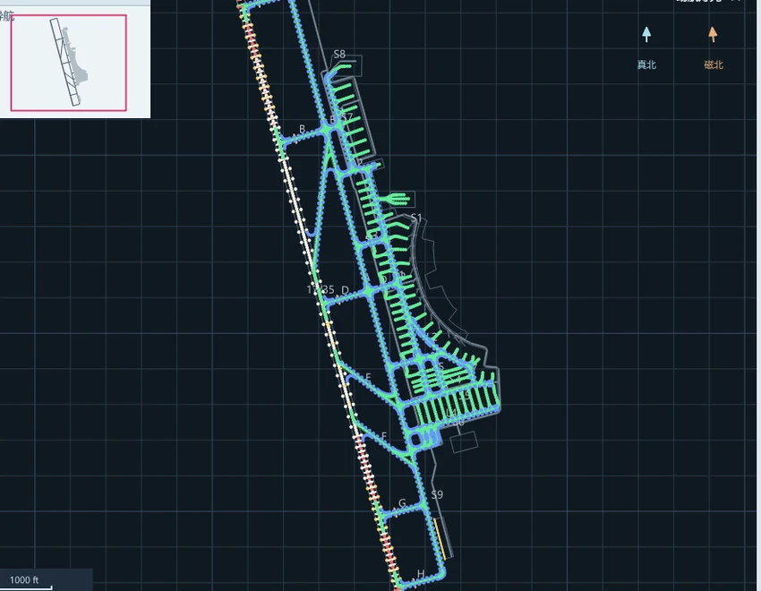
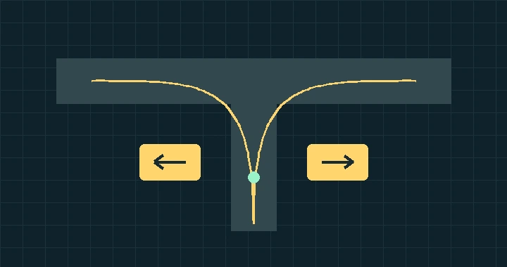
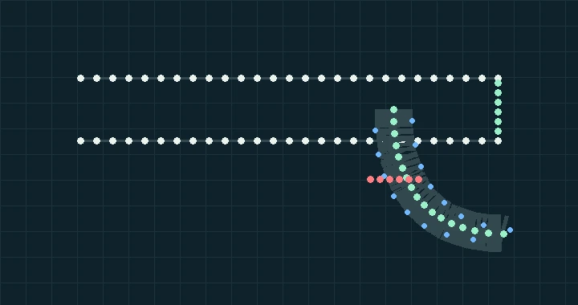
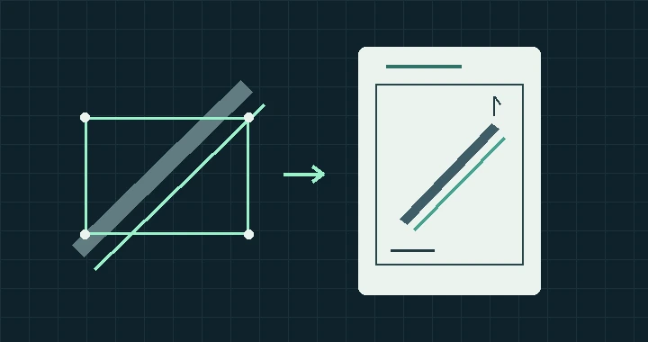
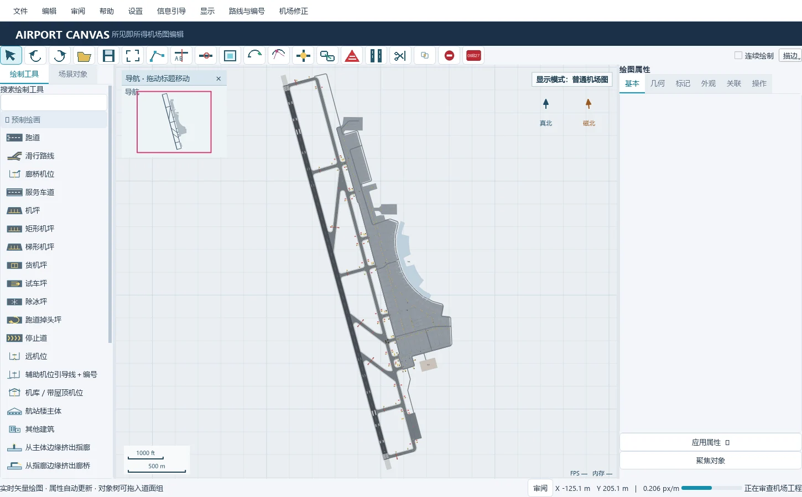

拖动节点调整转弯
选中节点编辑工具，拖动控制点，在画布上查看曲线如何变化。

四张局部示意图，展示从绘图到航图排版的具体操作。

选中节点编辑工具，拖动控制点，在画布上查看曲线如何变化。

在滑行道中线上吸附定位，再选择目的地。用 F5 检查两侧分支的方向箭头。

在 F7 放大跑道端或等待位置，选中灯光对象即可检查对应属性。

在 F8 选择航图范围，在页面上安排指北针、图例和比例尺。
使用随软件提供的 ZSQD 工程，查看编辑器的实际工作界面。

查看 Windows 发行版本，或从源码和图文文档开始。